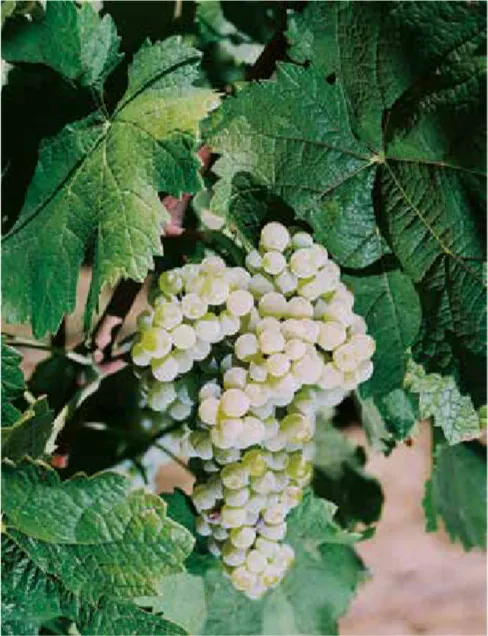

Kapitel 3 · Die portugiesischen Rebsorten
Arinto (W)
Diese Rebsorte findet man überall in Portugal. Seit 300 Jahren wird sie in der Literatur erwähnt (Alarte 1721) und gilt als eine der edelsten Weißweinsorten. Paulo Laureano beschreibt den Wein so: „Klares Zitronengelb, manchmal mit mineralischen Noten und mittlerer Intensität. Mit der Reife entwickelt sich ein Aroma, das an Honig, aber auch an Petrol erinnert. Man schmeckt die Säure im Mund, jedoch in einem wunderbaren Zusammenspiel mit fruchtigen Tönen.“
Regionale Einstufung:
DOC-Qualitätswein: Vinho Verde, Douro, Távora-Varosa, Bairrada, Beira Interior, Óbidos, Alenquer, Arruda, Torres Vedras, Bucelas, Tejo, Palmela, Setúbal, Alentejo-Unterregionen Évora, Moura, Redondo, Reguengos, Vidigueira.
IPR-Qualitätswein: Lafões, Encostas d’Aire, Alcobaça, Unterregionen der Azoren.
Landwein: Minho, Trás-os-Montes, Unterregionen der Beira Interior, Provinz Estremadura, Tejo, Terras do Sado, Lisboa, Alentejo, Algarve, Azoren.
Morphologie:

Junger Trieb (Form der Triebspitze): offen, mit karminroter Spitze, sehr dichte Behaarung.
Junges Blatt: grün mit kupferfarbenen Flecken, sehr dichte aufrechte Behaarung auf der Unterseite.
Junger Trieb: rote Streifen auf der Rückseite der Knoten und Internodien, grüne Knospen.
Ranken: mittellang, regelmäßig und unregelmäßig.
Blütenstand (Blütengeschlecht): zwittrig.
Ausgewachsenes Blatt: groß, fünfeckig, dreilappig. Oberseite der Spreite grün, regelmäßig, mittlere Blasigkeit, runzelig; Unterseite samtig, mit aufrechten Haaren mittlerer Dichte. Kurze konvexe Zähne, geschlossene V-förmige Stielbucht.
Traube: groß, konisch, mehrfach geflügelt, dicht. Mittelgroßer Stiel.
Beere: kurz, elliptisch, gelbgrün, mittelstarke Beerenhaut, weiches Fruchtfleisch.
Phänologie:
Austrieb: spät, 9 Tage nach der Fernão Pires.
Blüte: mittelfrüh, 5 Tage nach der Fernão Pires.
Farbumschlag der Beere: spät, 16 Tage nach der Fernão Pires.
Lesereife der Beere: spät, zwei Wochen nach der Fernão Pires.
Vegetatives und weinbauliches Potenzial:
Wuchskraft der Triebe: hoch.
Schnittholzgewicht: in wärmeren Zonen 1.800–3.000 kg/ha, je nach Klon und Terroir.
Triebhaltung: aufrecht, heliotrop; einige Endtriebe können seitwärts wachsen.
Länge der Internodien: unterschiedlich, teils mittel bis lang, teils lang.
Trieblänge: mittel bis groß, einige halbaufrecht und sehr lang.
Neigung zur Geiztriebbildung: mittel, besonders bei längeren Trieben.
Länge der Geiztriebe: teils mittel bis lang, teils kurz.
Mehrfachaustrieb: sehr selten.
Fruchtbarkeitsindex der Knospen: im Mittel niedrig, 0,8 Blütenstände je Trieb. Höchstens eine Traube je Trieb.
Traubengröße: groß (bis 450 g in warmen Zonen; 613–675 g in Küstenzonen).
Ertrag: niedrig mit traditionellem Standardmaterial; zertifizierte Klone erreichen hohe Erträge (bis 15 t/ha).
Ertragsbeständigkeit: regelmäßig; in Weinbergen mit ungeeigneter Erziehung kann die Bildung von Holztrieben den Ertrag beeinträchtigen.
Gleichmäßigkeit des Ertrags: sehr homogen bei virusfreiem, zertifiziertem Material.
Winkler-Index: 1.229 (Mittel).
Empfindlichkeit gegenüber abiotischen Faktoren: windempfindlich vor der Blüte und empfindlich auf Böden mit geringer Wasserspeicherfähigkeit.
Anfälligkeit für Pilzkrankheiten: anfällig für Falschen und Echten Mehltau, Phomopsis viticola und Traubenfäule. Eine gewisse Resistenz gegen Anthraknose.
Beerenhaut: mittel.
Erziehungssystem: Der Ertrag steigt mit Bogrebenerziehung, verbreitet ist aber der Cordon Royal. Das richtige Gleichgewicht zwischen Qualität und Menge ist schwer zu erreichen. Die Sorte hat große Blätter; Laubschnitt wird daher empfohlen, damit die Laubwand nicht zu dicht wird.
Bodenansprüche: saure oder kalkhaltige Böden, tiefgründig und feucht, aber gut durchlässig und nicht zu dicht, mit Nordausrichtung.
Klimaansprüche: Zonen im Landesinneren oder Küstenregionen mit gemäßigtem Klima.
Pflanzdichte: Rebabstand 1 m, Reihenabstand 2,5 m.
Bewässerung: empfindlich gegenüber Trockenstress; auf trockenen, kargen Böden wird daher Bewässerung empfohlen.
Verrieseln/Kleinbeerigkeit: geringes Risiko für Verrieseln, mittleres Risiko für Kleinbeerigkeit.
Verderb reifer Beeren: etwas Blauschimmelfäule, aber kaum Trockenschäden an der Traube.
Önologische Eigenschaften:
Potenzieller Alkoholgehalt: im Mittel 11,5 % vol. in der Küstenregion und in Südportugal.

Natürliche Säure: recht hoch (Gesamtsäure 6–9 g/l).
Oxidationsrisiko: gering.
Farbintensität des Weins: zitronengelb; bei später Lese kann die Farbe sehr intensiv werden.
Tannine: monomer 1,3–1,7 mg/l, oligomer 1,1–3,7 mg/l,
polymer 4,3–10,9 mg/l.
Gesamtpolyphenolindex (bei 280 nm): 93–119 mg/l.
Aromaprofil: Zitrusfrüchte. Terpenoide 400–500 μg/l (Alentejo); Benzenoide gesamt 470–530 μg/l; Norisoprenoide gesamt 250–350 μg/l.
Alterungspotenzial: hoch, der Wein gewinnt mit der Reife. Geeignet für den Fassausbau. Möglicherweise Petrolnote ähnlich wie beim Riesling.